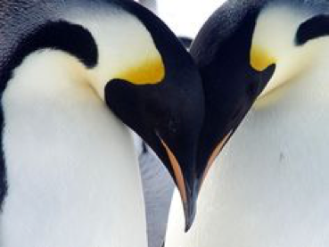
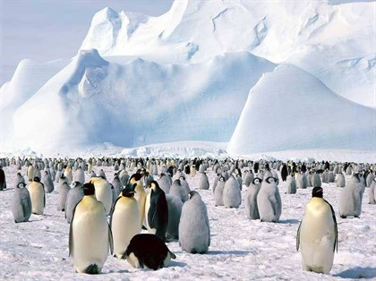

La palabra pingüino significa “pájaro gordo” y tiene origen portugués, muchos están de acuerdo en que es una palabra única para tan inusual tipo de ave. Se cree que los primeros pingüinos vivieron en Perú, hace más de 36 millones de años. Los pingüinos son bien conocidos por su elegante (como vestido de traje), apariencia, – con su blanco y negro, lo cual les da una apariencia única. Son una especie de ave, sin embargo no son capaces de volar, se cree que son descendientes de los primeros tipos de aves.
Existen algunos pingüinos que son completamente blancos, aunque son bastante raros, no tienen el camuflaje de los otros pingüinos, por lo que son presas más accesibles para depredadores. Los pingüinos blancos son también cazados por los humanos, aunque esto sea una práctica ilegal.la mayoría de las personas creen que un pingüino blanco es albino, pero la realidad es que son una especie de pingüino que simplemente es poco conocida. A los pingüinos no les preocupa el frio como podríamos pensar muchos, ya que tienen varias capas de grasa en sus cuerpos que los protegen de este. Sin embargo muchos se sobrecalientan, y eso es una preocupación.
Todos los tipos de pingüinos se alimentan de carne y necesitan explorar las aguas para tener acceso a alimentos vivos. Lo que consumen depende del lugar donde viven y lo que este fácilmente disponible. En muchas áreas, la fuente de alimentación puede llegar ser, a veces, tan escasos que los pingüinos van a consumir todo lo que pueden encontrar en el agua. También pueden luchar entre sí por comida si la ocasión lo requiere, estos escenarios dependen de la cantidad de comida disponible. Con los métodos de pesca extensiva de los humanos en algunas zonas, la oferta es cada vez menor para la supervivencia de los pingüinos.

Algunas de las grandes cualidades de los pingüinos son vistas en su proceso de reproducción. Pueden madurar y reproducirse cuando tienen de 4 a 8 años de edad. En general, las especies más pequeñas de pingüinos maduran a una edad más temprana que los grandes, sin embargo, los más pequeños también parecen tener una vida mucho más corta. El cortejo suele empezar con algún tipo de llamada y comunicación entre sí. En algunas especies existe agresión a la hora de competir por el derecho a reproducirse con alguna pareja en particular. Los machos tratan de atraer a las hembras acicalándose a sí mismos, construyendo nidos agradables, y a través sus comunicaciones vocales. Las hembras deciden si van a terminar con el apareamiento.
El hábitat de los pingüinos va a depender del tipo de pingüino del que se esté hablando. Algunos de ellos son capaces de vivir en las partes más frías del mundo, otros viven muy cerca del ecuador, donde las temperaturas son más cálidas. Todos los pingüinos, residen en el hemisferio sur, se encuentran en todos los continentes. Algunos pingüinos viven en gruesas capas de hielo la mayor parte del tiempo, debido al clima extremadamente frío, otros viven en playas de arena y pequeñas islas. Todos los pingüinos viven cerca del mar donde pueden cazar y alimentarse, ya que necesitan gran cantidad de peces, krills, calamares, y crustáceos para poder sobrevivir. Es por esta razón que viven principalmente cerca de corrientes de agua fría, de estas corrientes son capaces de extraer gran cantidad de alimentos, a menudo son encontrados en las regiones costeras de América del Sur, África, Australia y Nueva Zelanda.
